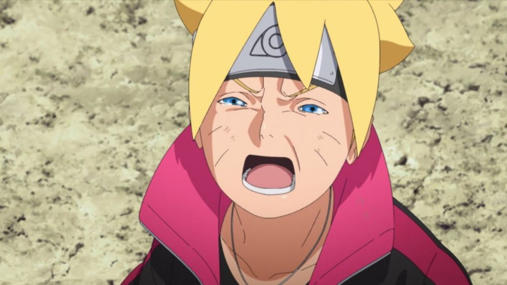

3 Fakta Anime Boruto Jelek
Ini adalah 3 fakta bahwa anime Boruto jelek dan sampah dan tidak layak
ditonton.
- Perkembangan karakter yang terlalu cepat
- Penggambaran ekspresi agak dongo
- Kebanyakan keluar dari manganya
Dongo momen

3 fakta kenapa ekspresinya agak dongo
- Kurang adanya emosi dalam ekspresi wajah
- Animasi kurang detail
- Beda jauh dengan adegan emosional yang ada di Naruto